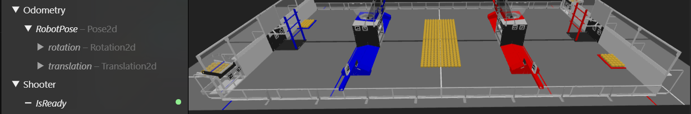

NetworkIO
NetworkIO es el motor estático de bajo nivel que maneja la comunicación entre el Robot y la red.
A diferencia de la implementación estándar de WPILib, esta clase administra automáticamente el ciclo de vida de los Publishers y Subscribers usando un sistema de Caché Inteligente, evitando la creación costosa de objetos en cada ciclo.
Organización Modular
Una de las filosofías de ForgeMini es mantener la arquitectura de datos limpia y estructurada.
En lugar de volcar todos los datos en la tabla SmartDashboard (que suele convertirse en un "cajón de desastre" desordenado), NetworkIO fomenta la creación de tablas raíz dedicadas para cada subsistema.
Ventajas de las Tablas Propias
Al usar NetworkIO.set("DriveTrain", ...) o NetworkIO.set("Shooter", ...) obtienes:
- Jerarquía Profesional: Tus datos se ven organizados lógicamente en herramientas como Glass o AdvantageScope.
- Depuración Focalizada: Si solo quieres ver qué pasa con el sistema de visión, abres la tabla
Visiony no te distraes con 50 variables del chasis. - Ancho de Banda Optimizado (NT4): Las herramientas pueden suscribirse solo a la tabla
/Shootersin consumir recursos recibiendo datos innecesarios de otros sistemas.
Tablas independientes en la raíz:

Datos publicados con NetworkIO mostrados en AdvantageScope
Compatibilidad
Aunque recomendamos usar tablas propias, NetworkIO es flexible. Si por alguna razón necesitas usar la tabla clásica por compatibilidad con un Dashboard viejo, simplemente usa:
NetworkIO.set("SmartDashboard", "MiDato", valor);
Enviar Datos Set
Para enviar datos a la red, usa el método estático set. NetworkIO decidirá automáticamente si usar una implementación optimizada para primitivos o la lógica de Structs.
Primitivos
// Enviando números (Double)
NetworkIO.set("DriveTrain", "Speed", 4.5);
NetworkIO.set("Shooter", "RPM", 3500.0);
// Enviando booleanos (Boolean)
NetworkIO.set("Intake", "IsDeployed", true);
// Enviando texto (String)
NetworkIO.set("Auto", "Status", "Running Path A");
Tipos soportados: double, boolean, String.
Objetos complejos
// Objetos Complejos (Usa Magic Structs)
// Automáticamente detecta que Pose2d tiene un struct y lo publica
NetworkIO.set("Odometry", "RobotPose", currentPose);
Tip
Puedes pasarle a NetworkIO cualquier objeto de WPILib que soporte Structs (como Translation2d, Rotation2d, ChassisSpeeds) sin configuración extra.
Magic Structs
No necesitas registrar nada manual. NetworkIO inspecciona el objeto en tiempo de ejecución, encuentra su campo .struct automáticamente y lo serializa de la forma más eficiente para NetworkTables 4.0.
Recibir Datos Gets
Para leer valores desde el Dashboard (útil para sintonizar PIDs o cambiar constantes sin redesplegar código), utiliza el método NetworkIO.get.
Este sistema es seguro por defecto: siempre debes proporcionar un defaultValue. Si la conexión se pierde o la clave no existe en NetworkTables, tu robot usará ese valor por defecto en lugar de crashear.
// Leyendo un PID (Si no existe, usa 0.0)
double kP = NetworkIO.get("DriveTrain", "kP", 0.0);
// Leyendo un interruptor (Si no existe, usa false)
boolean isDebug = NetworkIO.get("Global", "DebugMode", false);
// Úsalo directamente en tu lógica
if (NetworkIO.get("Shooter", "ForceFire", false)) {
shoot();
}
Tipos soportados: double, boolean.
Seguridad
Siempre asegúrate de que el defaultValue sea un valor seguro para tu robot (ej. velocidad 0.0), ya que será el valor que se use si el Dashboard se desconecta.
Ejemplo de Implementación (Manual)
package frc.robot.subsystems;
import edu.wpi.first.wpilibj2.command.SubsystemBase;
import com.stzteam.forgemini.io.NetworkIO; // 1. Importar la librería
public class SimpleShooter extends SubsystemBase {
// Definimos el nombre de la tabla una sola vez para evitar errores de dedo
private static final String TABLE = "Shooter";
private double currentRPM = 0.0;
private double kP = 0.005;
public SimpleShooter() {
// Opcional: Publicar valores iniciales para que aparezcan en Glass
NetworkIO.set(TABLE, "TargetRPM", 3000.0);
}
@Override
public void periodic() {
// =================================================
// 1. TELEMETRÍA (Outputs)
// =================================================
// Publicamos el estado actual del mecanismo
NetworkIO.set(TABLE, "CurrentRPM", currentRPM);
NetworkIO.set(TABLE, "IsReady", currentRPM > 2900);
// =================================================
// 2. SINTONIZACIÓN (Inputs)
// =================================================
// Leemos valores en tiempo real para ajustar el PID sin recompilar
double target = NetworkIO.get(TABLE, "TargetRPM", 0.0);
// Actualizamos el PID solo si cambiamos el valor en el Dashboard
this.kP = NetworkIO.get(TABLE, "kP", 0.005);
// Lógica del motor
runMotor(target);
}
private void runMotor(double target) {
// Lógica simulada de control
double error = target - currentRPM;
currentRPM += error * kP;
}
}
Nota
En este enfoque manual, tú eres responsable de llamar a set() y get() en cada ciclo dentro de periodic(). Si buscas automatizar esto, revisa la documentación de IOSubsystem.
Gestión de Recursos
Aunque NetworkIO maneja la memoria eficientemente reutilizando publicadores, a veces es necesario limpiar tablas completas (por ejemplo, al cambiar de modo Autónomo a Teleop, o en pruebas unitarias).
| Método | Descripción |
|---|---|
closeAll(String tableName) |
Cierra y elimina todos los Publishers y Subscribers que empiecen con ese nombre de tabla. |